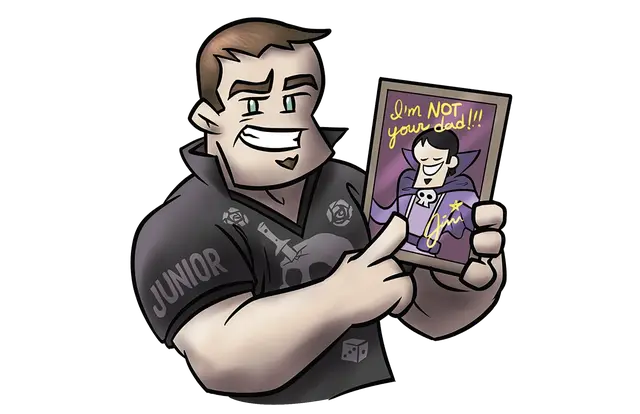

Потомок знаменитого авантюриста
Celebrity Adventurer's Scion

Имя вашей семьи вселяет страх и восхищение в сердца простых людей, но это не ваша заслуга. Песни и рассказы, прославляющие авантюрные подвиги вашего знаменитого родителя, широко известны. Дети по всей стране выросли, желая, чтобы они были тобой. Но быть ребенком известного авантюриста — это не только объятия и поцелуи.
Вы редко видели своих знаменитых родителей-авантюристов, и когда они были рядом, всё крутилось вокруг них и рассказах об убийстве этого демона или победе над тем драконом. Слишком часто вы просыпались от крепкого сна, когда кто-то стоит возле вашего дома и кричит о последней угрозе городу, региону или миру.
В конце концов, всё что вам осталось в наследство - это имя. Большая часть денег семьи шла на расходные материалы, от лечебных зелий и свитков заклинаний до обильного количества дварфийского эля. И все ожидают, что вы будете размахивать мечом или метать заклинания, как ваш знаменитый предок, из-за чего вам будет вдвойне трудно проявить себя.
Владение навыками: Восприятие, Выступление.
Владение инструментами: Набор для грима.
Языки: Два на ваш выбор
Снаряжение: Набор для грима, комплект отличной одежды и поясной кошель с 30 зм.
УМЕНИЕ: ИЗВЕСтное имя
Вы знаете и встречали множество влиятельных людей по всей стране, и некоторые из них, возможно, даже помнят вас. Вы можете получить небольшую помощь от крупной фигуры в кампании, на усмотрение Мастера. Кроме того, простые люди относятся к вам с почтением, а ваше наследие и истории, которые вы рассказываете, могут сгодится для бесплатного обеда или ночлега.
Персонализация
Потомки знаменитых авантюристов должны иметь дело с чужой славой и богатством, которого они не заработали, и ожиданиями, которые они никогда не смогут оправдать. Эти трудности могут иметь неблагоприятные последствия, но те, кто справляется с ними, могут прийти к достойному отношению и обоснованному мировоззрению. Те, кто терпит неудачу, становятся ожесточенными или ещё хуже.
| к8 | Черта характера |
| 1 | Я никогда не выйду из тени своего знаменитого родителя, и никто другой никогда не поймет этого бремени. |
| 2 | Я достаточно повидал приключенческую жизнь, чтобы иметь реалистичные ожидания и сочувствие к своим сверстникам. |
| 3 | Оправдать ожидания будет сложно, но я собираюсь это сделать. |
| 4 | Я привык к самому лучшему в жизни, и от этой привычки трудно избавиться. |
| 5 | Мой родитель привил мне чувство долга. Я стараюсь поддерживать его, даже когда шансы против меня. |
| 6 | Никто не может изобразить улыбку, рукопожатие или заинтересованный кивок так, как это умею я. |
| 7 | Я был частью приключенческой жизни с тех пор, как стал достаточно взрослым, чтобы ходить. Позвольте мне объяснить вам несколько вещей. |
| 8 | Любой риск оправдан, если он ведёт к победе над моими врагами... и присваиванию их имущества. |
| к6 | Идеал |
| 1 | Власть. Единственный способ преуспеть в этом мире — обрести власть и удерживать её изо всех сил. (Злой) |
| 2 | Мир. У тех, кто может найти или принести мир в окружающую их хаотичную реальность, есть всё. (Законный) |
| 3 | Слава. Я видел, к чему может привести слава. И я сделаю всё, чтобы получить всё это для себя. (Нейтральный) |
| 4 | Обучение. Тяжелая работа, самопожертвование и обучение ведут к успеху и, в конечном счете, к совершенству. (Любой) |
| 5 | Анонимность. Я хочу быть успешным. И один. С кучей охранников и оберегов между мной и всеми остальными в мире. (Любой) |
| 6 | Мудрость. Материальное богатство — это иллюзия. Мудрость – это настоящее сокровище. (Добрый) |
| к6 | Привязанность |
| 1 | Пока мои родители были в приключениях, меня вырастил слуга, и я забочусь об этом человеке больше, чем о ком-либо |
| 2 | Я считаю каждого члена бывшего приключенческого отряда моих родителей своей семьей. |
| 3 | Несмотря на его отсутствие, мой знаменитый родитель был добрым и щедрым. Я люблю его и хочу им гордиться. |
| 4 | Однажды мой родитель принес домой проклятый магический предмет. Это моя одержимость. |
| 5 | Дом моего детства хранит все мои лучшие воспоминания, и его содержание — моя главная задача. |
| 6 | В детстве у меня был воображаемый друг, на которого я всегда мог положиться. Этот друг до сих пор со мной. |
| к6 | Слабость |
| 1 | Ты не знаешь, через что я прохожу. И ты никогда этого не поймёшь. |
| 2 | Ты. Принеси мой плащ. И можешь помассировать мне ноги. |
| 3 | Мои товарищи храбры, но я должен устранить эту угрозу в одиночку, чтобы доказать свою ценность. |
| 4 | Оу, да, вот это заклинание? Оно названо в честь лучшего друга моего родителя. Позвольте мне рассказать вам о нём. |
| 5 | Мои лучшие дни позади. Впереди только тяжкий труд, боль и смерть. |
| 6 | Ты должен заботиться о себе. Потому что больше некому. |